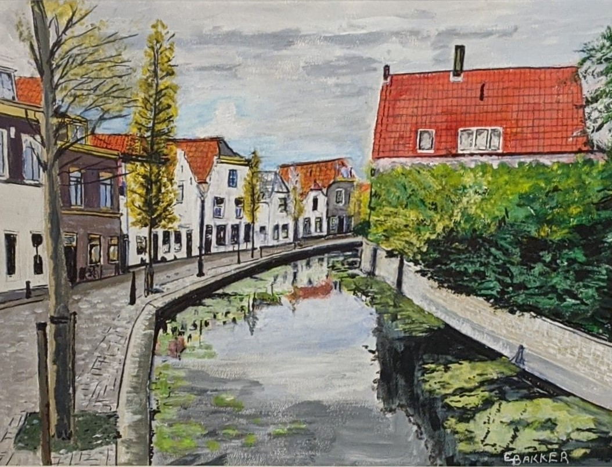
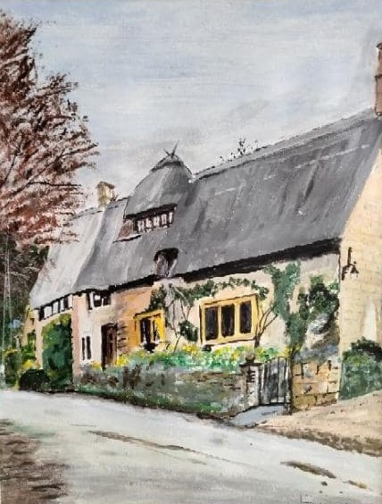
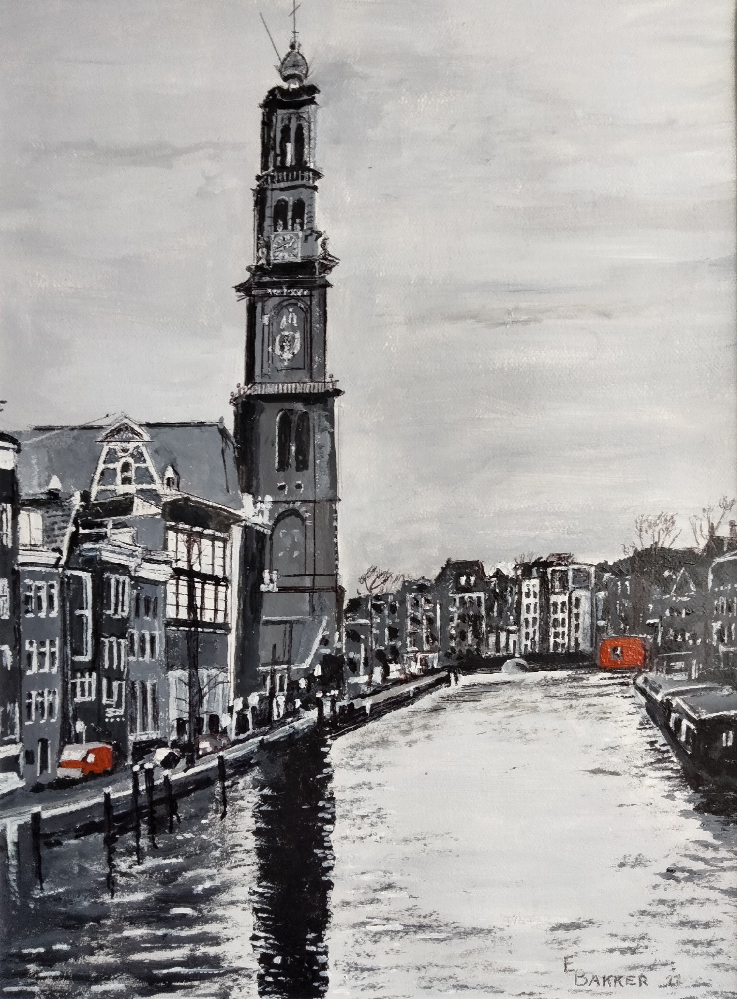

City Scenes by Opa

Bridge Over Keizersgragt - Amsterdam.

De Munt - Amsterdam.

Maasland.
Maasland.
(TapClick anywhere to close)

Walking Bridge in Delft.

Cotswald Cottage.
Cotswald Cottage.
(TapClick anywhere to close)

Westertoren - Amsterdam.
Westertoren - Amsterdam.
(TapClick anywhere to close)